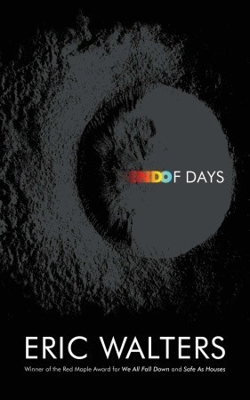
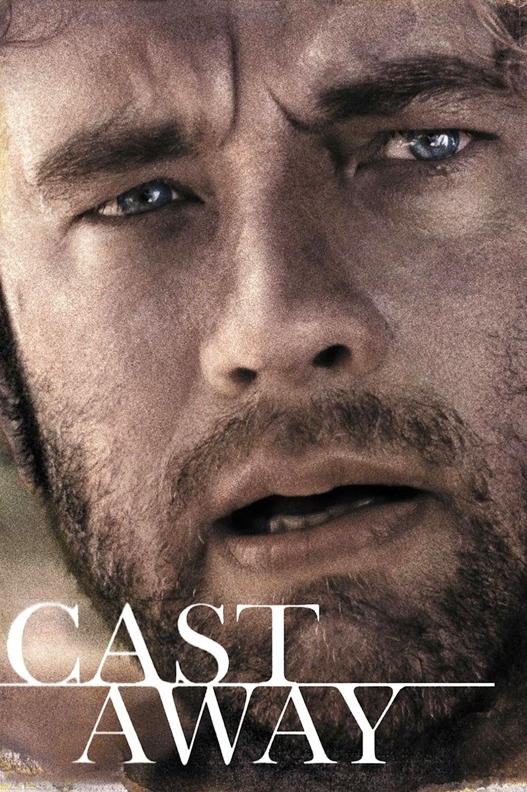

Survival
Survive
[ser-vahyv] - the act of continuing to live
Theme
Survival is a state of mind in which many can go to extreme lengths to stay alive.
An instance where this is evident is, in school I read a book called Lord of The Flies. In Lord of The Flies, there is a character named Jack, he is a very aggressive person. He takes any measures he needs to in order to survive. He goes through the loss of innocence and he acts very proud about it because he beleives that is it him only means of survival.
I have analyzed the topic of survival through a
number of ways which will be demonstrated as follows:
1. A book review focusing on the topic of Survival
2. A movie review analyzing Survival
3. A poem which relates to Survival
 